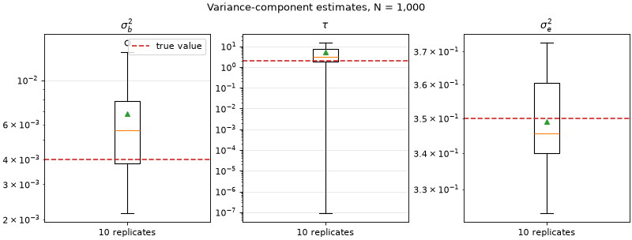

Variance-component estimation with 1,000 individuals#
This tutorial repeats a seeded phenotype simulation ten times with 1,000 individuals. Each replicate samples raw dosage effects from the simplified evolutionary prior, adds residual noise, and estimates the variance components with profiled AI-REML. The final figure is a box plot of the ten estimates; the horizontal line in each panel is the generating value.
The example uses a broad, fixed allele-frequency spectrum so that the
frequency-dependent tau parameter is visible in a modest simulation. The
same fitting call can consume a GRG through the matrix-free BOLT-style API;
the dense construction here keeps the ten-replicate tutorial quick and makes
the simulation boundary easy to inspect.
Simulation and fitting code#
1"""Ten-replicate, 1,000-individual variance-component tutorial."""
2
3from __future__ import annotations
4
5import matplotlib.pyplot as plt
6import numpy as np
7
8from evo_lmm import EvolutionaryLmmOps, SimplifiedPrior, fit_reml
9
10
11N_INDIVIDUALS = 1_000
12N_VARIANTS = 500
13N_REPLICATES = 10
14TRUE_PRIOR = SimplifiedPrior(sigma_b2=0.004, tau=2.0)
15TRUE_SIGMA_E2 = 0.35
16
17
18def fit_one_replicate(replicate: int) -> tuple[float, float, float, bool]:
19 """Simulate and fit one replicate, returning ``(sigma_b2, tau, sigma_e2, converged)``."""
20
21 rng = np.random.default_rng(1_000 + int(replicate))
22 population_frequencies = np.linspace(0.03, 0.5, N_VARIANTS)
23 dosage = rng.binomial(
24 2,
25 population_frequencies,
26 size=(N_INDIVIDUALS, N_VARIANTS),
27 ).astype(np.float64)
28 frequencies = dosage.mean(axis=0) / 2.0
29 ops = EvolutionaryLmmOps.from_dense(dosage, frequencies, model="simplified")
30
31 effects = rng.normal(
32 0.0,
33 np.sqrt(TRUE_PRIOR.effect_variances(frequencies)),
34 )
35 phenotype = ops.apply_model_x(effects) + rng.normal(
36 0.0,
37 np.sqrt(TRUE_SIGMA_E2),
38 size=N_INDIVIDUALS,
39 )
40 fit = fit_reml(
41 ops,
42 phenotype,
43 initial=TRUE_PRIOR,
44 exact=False,
45 trace_probes=64,
46 seed=2_000 + int(replicate),
47 max_iter=25,
48 cg_tol=1e-8,
49 )
50 return (
51 float(fit.prior.sigma_b2),
52 float(fit.prior.tau),
53 float(fit.sigma_e2),
54 bool(fit.diagnostics.converged),
55 )
56
57
58def run_replicates() -> np.ndarray:
59 """Return one row per replicate with estimates and a convergence flag."""
60
61 return np.asarray(
62 [fit_one_replicate(replicate) for replicate in range(N_REPLICATES)],
63 dtype=np.float64,
64 )
65
66
67def make_box_plot(results: np.ndarray) -> plt.Figure:
68 """Draw log-scale estimate boxes with the generating values overlaid."""
69
70 estimates = results[:, :3]
71 true_values = np.array(
72 [TRUE_PRIOR.sigma_b2, TRUE_PRIOR.tau, TRUE_SIGMA_E2],
73 dtype=np.float64,
74 )
75 labels = [r"$\sigma_b^2$", r"$\tau$", r"$\sigma_e^2$"]
76
77 figure, axes = plt.subplots(1, 3, figsize=(10, 3.8), constrained_layout=True)
78 for axis, label, values, true_value in zip(axes, labels, estimates.T, true_values):
79 positive_values = np.maximum(values, np.finfo(np.float64).tiny)
80 axis.boxplot(positive_values, tick_labels=["10 replicates"], showmeans=True)
81 axis.axhline(true_value, color="tab:red", linestyle="--", label="true value")
82 axis.set_yscale("log")
83 axis.set_title(label)
84 axis.grid(axis="y", alpha=0.3)
85 axes[0].legend(loc="best")
86 figure.suptitle("Variance-component estimates, N = 1,000")
87 return figure
88
89
90results = run_replicates()
91figure = make_box_plot(results)
92
93if __name__ == "__main__":
94 print("converged replicates:", int(np.count_nonzero(results[:, 3])))
95 print(results[:, :3])
96 if "agg" not in plt.get_backend().lower():
97 plt.show()
The script uses a seeded Hutchinson trace estimator. The estimate of
sigma_e2 is usually tighter than the shape estimate tau because a
single phenotype vector contains less information about the frequency shape.
For that reason the panels use logarithmic y-axes and show all ten replicates,
including fits that land near the tau=0 boundary.
Replicate estimates#
{kind=link}
{kind=link}

The box plot is a compact Monte Carlo diagnostic, not a replacement for
FitDiagnostics. In a real analysis, inspect convergence, trace standard
errors, AI conditioning, and boundary warnings alongside the point estimates.